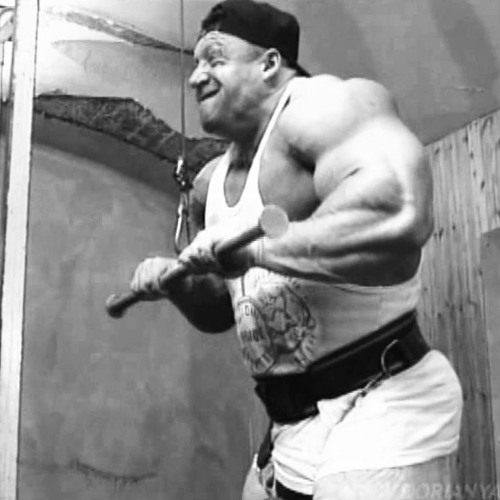

Benefícios do Treino Low Volume
O que é o Treino Low Volume?
O treino Low Volume é uma metodologia de treinamento que prioriza a realização de poucas séries e repetições por sessão, focando na intensidade e na execução correta dos exercícios. Ao contrário dos treinos tradicionais que podem exigir longos períodos na academia, o Low Volume busca eficiência e qualidade.

Principais Vantagens
Esse tipo de treino oferece diversos benefícios, entre eles:
- Recuperação mais rápida: Menos volume significa menos desgaste muscular, facilitando a recuperação.
- Maior foco na técnica: Com menos repetições, é possível concentrar-se na execução perfeita dos movimentos.
- Prevenção de lesões: A redução do volume diminui o risco de lesões por sobrecarga.
- Ganhos de força e definição: A intensidade ajuda a melhorar a força muscular e a definição corporal.
- Menos tempo de treino: Ideal para quem tem uma rotina corrida e busca resultados eficazes em pouco tempo.
Como funciona o Treino Low Volume?
O treino geralmente consiste em 2 a 4 séries por exercício, com repetições variando entre 6 e 12, focando sempre em carga adequada e execução controlada. O descanso entre séries costuma ser maior para garantir a recuperação e permitir um desempenho máximo em cada série.
Quem deve optar pelo Treino Low Volume?
Esse método é recomendado para:
- Pessoas com pouco tempo para treinar diariamente.
- Aqueles que querem evitar o desgaste excessivo causado por treinos longos.
- Iniciantes que precisam aprender a técnica com cuidado.
- Praticantes que buscam manter a forma e a saúde sem exageros.
- QUALQUER UM!

Dicas para maximizar os resultados
Para tirar o máximo proveito do treino Low Volume, é importante:
- Manter a intensidade alta em cada série.
- Garantir a execução correta dos movimentos para evitar lesões.
- Ter uma alimentação adequada para ajudar na recuperação muscular.
- Respeitar os períodos de descanso entre treinos.
Conclusão
O treino Low Volume é uma excelente opção para quem quer resultados rápidos e eficazes sem passar horas na academia. Com foco na qualidade, intensidade e recuperação, ele oferece muitos benefícios para saúde, força e estética corporal.